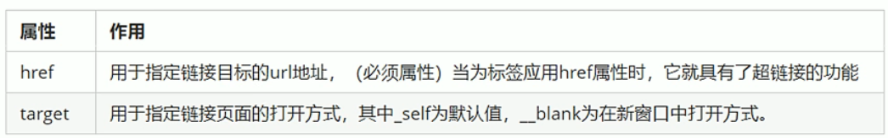

(5) 超链接
作用：从一个网页跳转到另一个网页，a 意为 anchor
语法：<a href="目标地址" target="目标窗口的弹出方式"> 各种网页元素（文本、图片、表格、音频、视频等） </a>

链接分类：
1、外部链接: href后跟一个url地址, 例如：Baidu 注意 url地址一定是http(s):// 开头的
2、内部链接：href后跟一个相对路径即可
3、空链接： href后跟一个#表示place holder, 例如： 空连接
4、下载链接：href后跟一个文件或一个压缩包，就会下载这个文件
5、锚点链接(快速定位到页面内的某个位置，类似goto)
href后跟#tag, 例如：<a href="#ID" >
在目标位置需要用id=tag来加标签，例如：<h3 id=ID>成就</h3>
例如： 跳转到(2) 注意:
(1) 当同一个页面内有多个同名的跳转标签时，只有第一个会生效
(2) 超链接支持跳转到另一个网页并定位到指定位置，语法为: <a href="{目标表地址}#{位置tag}">